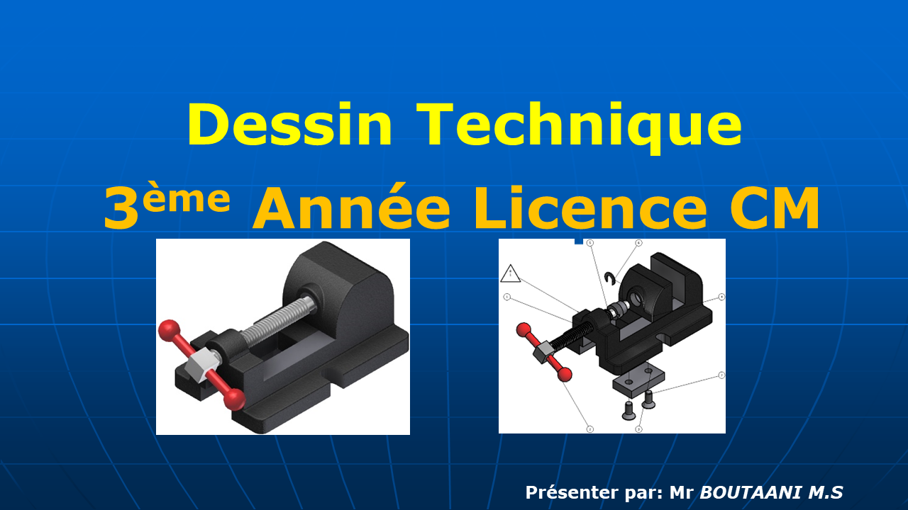

Dessin Technique • Support de Cours Officiel
125 Diapositives Haute Résolution
PowerPoint Original HD
درس رسم التجميع الميكانيكي والمخططات التجميعية (Dessin d'Assemblage)
Dessin d'Assemblage & Conception Mécanique (Licence 3 & Master CM)
عرض شرائح أصلي عالي الدقة (125 شريحة كاملة) مخصص لدراسة رسومات التجميع الميكانيكية، قراءة جداول المصطلحات، التفاوتات، الوصلات الميكانيكية والإحكام.

انتقال:
/ 125
←
→
التنقل بالأسهم
view_carousel
شريط المصغرات للتنقل السريع (Thumbnails)
انقر على أي شريحة للانتقال الفوري
المحاور والمفاهيم الهندسية المعالجة في هذا العرض
- مبادئ وقواعد رسم التجميع الميكانيكي (Règles générales du dessin d'assemblage)
- قراءة وفك رموز جداول التعيين والمصطلحات (Nomenclature des pièces et sous-ensembles)
- الترقيم المرجعي وتحديد العناصر (Repérage et indexation des composants)
- التوافقات والتفاوتات الميكانيكية (Ajustements ISO: Jeu, Serrage, Incertain)
- الوصلات الثابتة والقابلة للفك (Liaisons démontables: vis, boulons, goujons, clavettes)
- توجيه ومحاذاة الحركة الدورانية (Guidage en rotation: roulements, coussinets)
- حلول الإحكام ومنع التسريب (Étanchéité statique et dynamique: joints toriques, à lèvres)
- تحليل آليات التشغيل والوظائف الميكانيكية للمجموعات المجمعة (Cinématique des sous-ensembles)